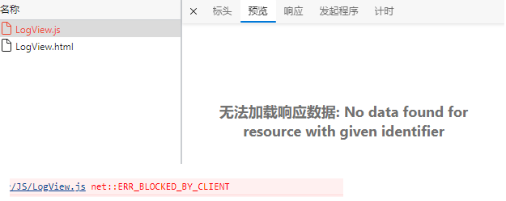
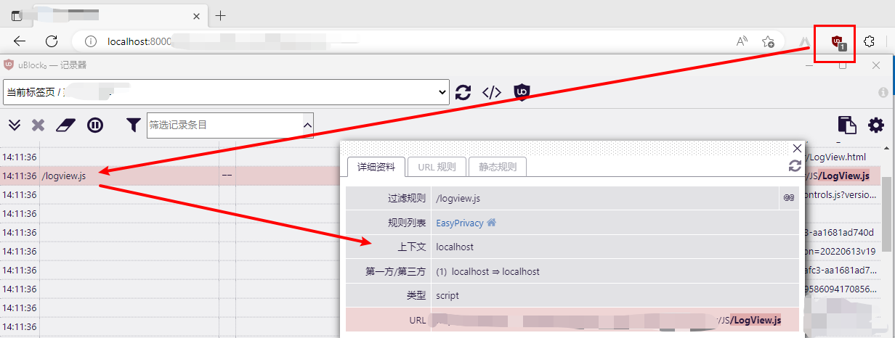

整理收集一些 Chrome 扩展 相关的问题
官方：一款高效的网络请求过滤工具，占用极低的内存和 CPU。
这里作为广告过滤插件使用，感觉还不错……有一次发现本地站点的某个页面异常（使用的是 Edge ）：其他同事的没有问题，后来自己使用 chrome 也没有问题（现在知道是什么原因了，chrome 没有安装该插件）。于是就忽略这个问题，似乎将它忘记了。没想到过了几天再次访问这个页面时当然还是异常，这时想着去查一下原因。
排查发现：异常页面依赖的JS文件加载异常，如下图

开始以为是JS内容的问题：新语法或者书写错误等。后来清空了JS之后还是有问题，就发现不是JS内容的问题了。于是查了一下：有的说是跨域的问题（这里不是）；有的说是广告过滤插件的问题（ Chrome等浏览器下出现net::ERR_BLOCKED_BY_CLIENT的解决办法 ）。最后发现还真是插件的问题，如下图：

本页面也引了一个名为